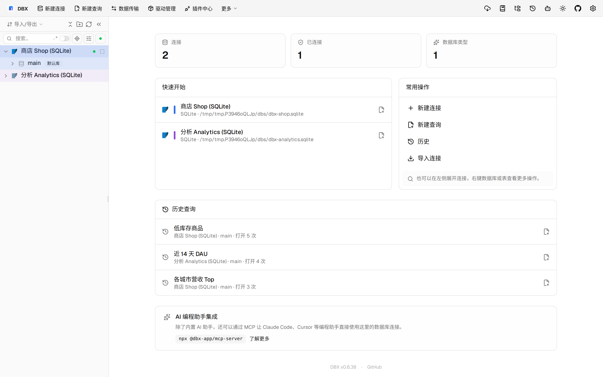

#11569 界面预览
commit c30700c · 回到 PR · 这个 PR 为 Oracle / OceanBase Oracle 连接新增了“用户、角色与授权”页，并在其中内嵌了用户变更的预览、执行与读回结果展示；同时把 Oracle 家族连接的用户管理入口切到这套新界面。页面还能读取并筛选授权来源、角色关系与字典可见性状态。
⚠️ 这次录制有 9 步没能按计划执行；带 ⚠️ 的截图拍摄于步骤失败之后，画面未必是说明文字所描述的状态。
红线是鼠标走过的轨迹，红色圆环是一次点击；底部文字是这一步在做什么。多个场景各自从应用初始状态开始。空格暂停，← → 逐段查看。
⚠️ Oracle 用户管理页 · 打开后的 Oracle 用户管理页，查看用户、角色与授权区域

⚠️ 用户变更预览与执行 · 查看预览对话框里的 SQL 与状态复核信息